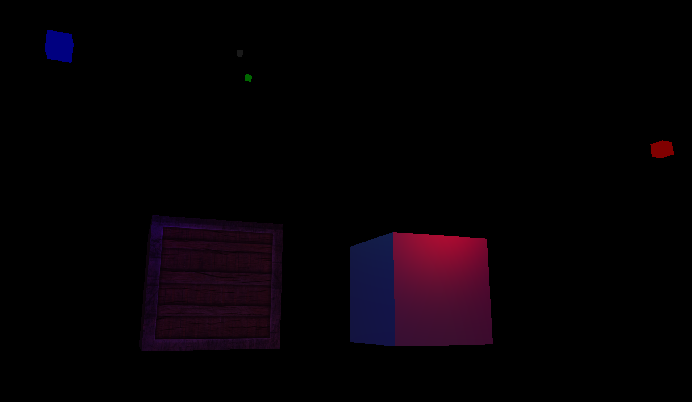

The OpenGL specification describes an abstract application programming interface (API) for drawing 2D and 3D graphics. It is designed to be implemented mostly or entirely using hardware acceleration such as a GPU, although it is possible for the API to be implemented entirely in software running on a CPU. The API is defined as a set of functions which may be called by the client program, alongside a set of named integer constants (for example, the constant GL_TEXTURE_2D, which corresponds to the decimal number 3553). Although the function definitions are superficially similar to those of the programming language C, they are language-independent. As such, OpenGL has many language bindings, some of the most noteworthy being the JavaScript binding WebGL (API, based on OpenGL ES 2.0, for 3D rendering from within a web browser); the C bindings WGL, GLX and CGL; the C binding provided by iOS; and the Java and C bindings provided by Android. In addition to being language-independent, OpenGL is also cross-platform. The specification says nothing on the subject of obtaining and managing an OpenGL context, leaving this as a detail of the underlying windowing system. For the same reason, OpenGL is purely concerned with rendering, providing no APIs related to input, audio, or windowing.
